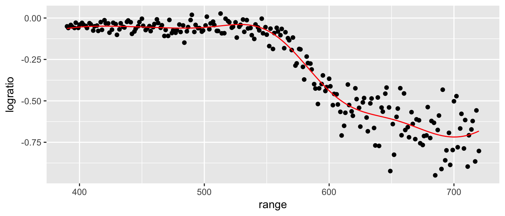

Chapter 5 Another example
## Skipping install of 'dsData' from a github remote, the SHA1 (208be54a) has not changed since last install.
## Use `force = TRUE` to force installationWe now consider a case where the number of observations is not the same between groups. Here we consider the case where we are interested in using hemocrit levels to detect if a cyclist is cheating.
data('Hemocrit', package='dsData')
ggplot(Hemocrit, aes(x=hemocrit, y=status)) + geom_point()
What if I just naively assume that all professional cyclists are clean? How accurate is this prediction scheme?
mean( Hemocrit$status == 'Clean' )## [1] 0.95In this case, I am pretty accurate because we correctly classify 95% of the cases! Clearly we should be more intelligent. Lets use the LDA to fit a model that uses hemocrit.
model <- train( status ~ hemocrit, method='lda', data=Hemocrit)
Hemocrit$yhat <- predict(model)
table( Truth=Hemocrit$status, Predicted=Hemocrit$yhat)## Predicted
## Truth Clean Cheat
## Clean 188 2
## Cheat 6 4So this method basically looks to see if the hemocrit level is greater than
Hemocrit %>% group_by(status) %>%
summarise(xbar=mean(hemocrit))## # A tibble: 2 x 2
## status xbar
## <fctr> <dbl>
## 1 Clean 47.91675
## 2 Cheat 50.14432(47.917 + 50.144)/2## [1] 49.0305and calls them a cheater. Can we choose something a bit more clever? The predict function has an option where it returns the class probabilities. By default, it chooses the category with the highest probability (for two classes than means whichever is greater than 0.50). We can create a different rule that labels somebody a cheater only if the posterior probability is greater than 0.8 or whatever.
pred <- predict(model, type='prob')
Hemocrit$yhat <- ifelse( pred$Cheat <= .8, 'Clean', 'Cheat' )
table( Truth=Hemocrit$status, Predicted=Hemocrit$yhat)## Predicted
## Truth Cheat Clean
## Clean 0 190
## Cheat 4 6mean( Hemocrit$status == Hemocrit$yhat )## [1] 0.97ggplot(Hemocrit, aes(x=hemocrit, y=status, color=yhat)) + geom_point() Great, now we have no false-positives, but a number of folks are getting away with cheating. But what if we back that up, how many false positives do we get… What we want is a graph that compares my false-positive numbers to the true-positives.
Great, now we have no false-positives, but a number of folks are getting away with cheating. But what if we back that up, how many false positives do we get… What we want is a graph that compares my false-positive numbers to the true-positives.
cut.offs <- seq(0, 1, length=1001)
results <- data.frame(cut.off=cut.offs,
false.positive.rate=rep(NA,1001),
true.positive.rate=rep(NA,1001))
for( i in 1:length(cut.offs) ){
Hemocrit$yhat <- ifelse( pred$Cheat <= cut.offs[i], 'Clean', 'Cheat' )
# get the factor levels ordered the same way that Hemocrit$status has
Hemocrit$yhat <- factor(Hemocrit$yhat, levels=c('Clean', 'Cheat'))
confusion <- table(Truth=Hemocrit$status, Prediction=Hemocrit$yhat)
results[i,'false.positive.rate'] <- confusion[1,2] / sum( confusion[1,])
results[i, 'true.positive.rate'] <- confusion[2,2] / sum( confusion[2,])
}# make sure we don't wiggle due to repeated observations
results <- results %>% arrange(false.positive.rate, true.positive.rate)
ggplot(results, aes(x=false.positive.rate, y=true.positive.rate)) +
geom_line() +
ggtitle( 'ROC' )
5.1 Exercises
- ISL Chapter 4, problem 4: When the number of features p is large, there tends to be a deterioration in the performance of KNN and other local approaches that perform prediction using only observations that are near the test observation for which a prediction must be made. This phenomenon is known as the curse of dimensionality, and it ties into the fact that non-parametric approaches often perform poorly when p is large. We will now investigate this curse.
Suppose that we have a set of observations, each with measurements on \(p=1\) feature, \(X\). We assume that \(X\) is uniformly (evenly) distributed on \([0,1]\). Associated with each observation is a response value. Suppose that we wish to predict a test observation’s response using only observations that are within 10% of the range of \(X\) closest to that test observation. For instance, in order to predict the response for a test observation with \(X=0.6\), we will use observations in the range \([0.55, 0.65]\). On average, what fraction of the available observations will we use to make the prediction?
- Now suppose that we have a set of observations, each with measurements on \(p=2\) features, \(X_{1}\) and \(X_{2}\). We assume that \(\left(X_{1},X_{2}\right)\) are uniformly distributed on \([0, 1] × [0, 1]\). We wish to predict a test observation’s response using only observations that are within 10% of the range of \(X_{1}\) and within 10% of the range of \(X_{2}\) closest to that test observation. For instance, in order to predict the response for a test observation with \(X_{1} = 0.6\) and \(X_{2} = 0.35\), we will use observations in the range \([0.55, 0.65]\) for \(X_{1}\) and in the range \([0.3, 0.4]\) for \(X_{2}\). On average, what fraction of the available observations will we use to make the prediction?
- Now suppose that we have a set of observations on \(p=100\) features. Again the observations are uniformly distributed on each feature, and again each feature ranges in value from 0 to 1. We wish to predict a test observation’s response using observations within the 10% of each feature’s range that is closest to that test observation. What fraction of the available observations will we use to make the prediction?
- Using your answers to parts (a)–(c), argue that a drawback of KNN when p is large is that there are very few training observations “near” any given test observation. Even for 3 dimensions, the scheme proposed for KNN can only use approximately 1/1000th of the data, and adding more dimensions just makes this worse. In very high dimensions, the idea of “near” doesn’t really work because in order to be “near” two points must be near in all dimensions and if they are different in any one dimension, then they get classified as being far apart, even if they are identical in the other 99 dimensions.
Now suppose that we wish to make a prediction for a test observation by creating a p-dimensional hypercube centered around the test observation that contains, on average, 10% of the training observations. For p = 1, 2, and 100, what is the length of each side of the hypercube? Comment on your answer. Hint: Use the equation from part (c).
- ISL Chapter 4, problem 5: We now examine the differences between LDA and QDA.
- If the Bayes decision boundary is linear, do we expect LDA or QDA to perform better on the training set? On the test set?
- If the Bayes decision boundary is non-linear, do we expect LDA or QDA to perform better on the training set? On the test set?
- In general, as the sample size n increases, do we expect the test prediction accuracy of QDA relative to LDA to improve, decline, or be unchanged? Why?
- True or False: Even if the Bayes decision boundary for a given problem is linear, we will probably achieve a superior test error rate using QDA rather than LDA because QDA is flexible enough to model a linear decision boundary. Justify your answer.
- ISL Chapter 4, problem 6: Suppose we collect data for a group of students in a statistics class with variables \(X_{1}\) = hours studied, \(X_{2}\) = undergrad GPA, and \(Y\) = receive an A. We fit a logistic regression and produce estimated coefficient, \(\hat{\beta}_0=-6\), \(\hat{\beta}_1=0.05\), \(\hat{\beta}_2=1\).
- Estimate the probability that a student who studies for 40 hours and has an undergrad GPA of 3.5 gets an A in the class.
- How many hours would the student in part (a) need to study to have a 50% chance of getting an A in the class?
ISL Chapter 4, problem 8: Suppose that we take a data set, divide it into equally-sized training and test sets, and then try out two different classification procedures. First we use logistic regression and get an error rate of 20% on the training data and 30% on the test data. Next we use 1-nearest neighbors (i.e. K = 1) and get an average error rate (averaged over both test and training data sets) of 18%. Based on these results, which method should we prefer to use for classification of new observations? Why?
- ISL Chapter 4, problem 11: In this problem, you will develop a model to predict whether a given car gets high or low gas mileage based on the Auto data set.
- Create a binary variable,
mpg01, that contains a 1 if mpg contains a value above its median, and a 0 if mpg contains a value below its median. You can compute the median using themedian()function. Note you may find it helpful to use thedata.frame()function to create a single data set containing bothmpg01and the other Auto variables. - Explore the data graphically in order to investigate the association between mpg01 and the other features. Which of the other features seem most likely to be useful in predicting mpg01? Scatterplots and boxplots may be useful tools to answer this question. Describe your findings.
- Split the data into equally sized training and test sets.
- Perform LDA on the training data in order to predict mpg01 using the variables that seemed most associated with
mpg01in (b). What is the test error of the model obtained? - Perform QDA on the training data in order to predict mpg01 using the variables that seemed most associated with mpg01 in (b). What is the test error of the model obtained?
- Perform logistic regression on the training data in order to predict
mpg01using the variables that seemed most associated withmpg01in (b). What is the test error of the model obtained? - Perform KNN on the training data, with several values of K, in order to predict
mpg01. Use only the variables that seemed most associated withmpg01in (b). What test errors do you obtain? Which value of K seems to perform the best on this data set?
- Create a binary variable,
ISL Chapter 4, problem 13: Using the Boston data set, fit classification models in order to predict whether a given suburb has a crime rate above or below the median. Explore logistic regression, LDA, and KNN models using various subsets of the predictors. Describe your findings.